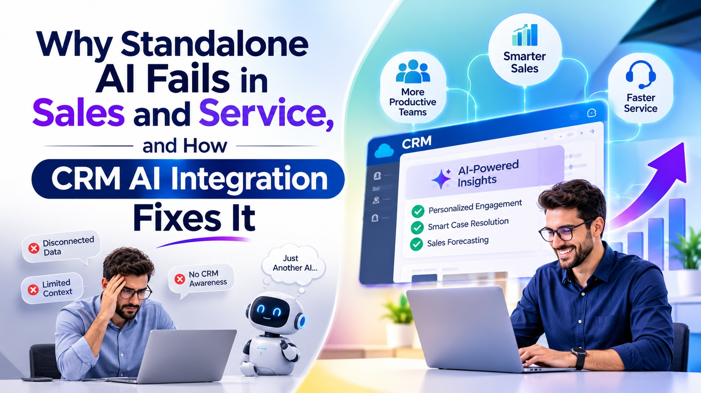

Why Standalone AI Fails in Sales and Service, and How CRM AI Integration Fixes It

A chatbot or writing assistant that sits outside the CRM can look useful in a trial. In daily sales and service work it keeps missing, because it does not know who the customer is, what was promised last week, or what the account is worth. The gap is context, and integration is how teams close it.
The Context Gap
Sales and service work depends on facts that live in the CRM: deal stage, contact history, open cases, contract terms, and past conversations. A standalone AI tool sees none of it unless a person pastes it in. Every answer is then a guess built from whatever the user remembered to include.
This is why a thoughtful approach to predictive CRM analytics integration matters: predictions and suggestions are only as good as the records behind them, and those records stay inside the CRM.
How It Fails in Sales
- Generic outreach: Drafts ignore the buyer's role, history, and stage, so they read like templates.
- Weak prioritization: Without pipeline data, the tool cannot say which deals deserve attention first.
- Manual copying: Reps move notes and details between tools, and the CRM falls out of date.
- Unreliable forecasts: Predictions built on partial data miss the signals that matter.
How It Fails in Service
- Answers without account context: The tool does not know the customer's plan, products, or open issues.
- Repeated questions: Customers re-explain problems because history is not visible.
- No safe actions: It can suggest a refund or update but cannot perform or log it.
- Poor escalation: Hand-offs lose detail, so agents start from zero.
Standalone vs Integrated
| Area | Standalone AI | CRM-integrated AI |
|---|---|---|
| Customer context | Pasted in by hand | Read from live CRM records |
| Permissions | Separate or unclear | Follows CRM roles and sharing rules |
| Actions | Suggests only | Updates records and triggers workflows with approval |
| Data freshness | Depends on the user | Current at the time of the request |
| Measurement | Hard to tie to outcomes | Linked to pipeline and case metrics |
How Integration Fixes It
Integration puts the AI where the data and the work already are. It reads the account, applies the same permissions as the user, drafts or acts in context, and writes the result back to the record. Nothing needs to be copied, so nothing falls out of date.
Teams with several CRMs or tools often add a connector layer so agents see one consistent view across systems, rather than building a separate integration for each.
Implementation Steps
- Pick one workflow. Choose a task such as lead follow-up or case summaries with a clear baseline.
- Clean the key fields. Fix duplicates and missing values on the records the AI will use.
- Connect with least access. Give the AI only the objects and fields it needs.
- Start in suggest mode. Let users accept, edit, or reject before any automatic action.
- Measure against the baseline. Track time saved, response speed, and conversion or resolution rates.
- Expand carefully. Add automation for low-risk, reversible tasks once results hold.
Guardrails
- AI access follows CRM roles and field-level security
- Consequential actions need human approval
- Every AI-written change is logged to the record
- A rollback option exists for automated steps
- Quality is tested on a fixed set of real examples
FAQs
Why does standalone AI fail in sales and service?
It cannot see CRM context such as account history, deal stage, and open cases, so its answers are generic and often wrong for the situation.
What does CRM AI integration mean?
It means connecting AI directly to CRM data and workflows, so it reads live records, follows permissions, and writes results back.
Do we have to replace our CRM?
No. Integration adds AI on top of the CRM you already use, usually through APIs and a controlled connector layer.
Is it safe to give AI access to customer data?
It can be, with least-privilege access, role-based permissions, approval steps, and audit logs. Confirm data handling terms with each provider.
How do we prove the value?
Record a baseline before launch, then compare time saved, response times, and conversion or resolution rates after rollout.
Conclusion
Standalone AI fails in sales and service because it works without the context that makes advice useful. Integration restores that context, keeps permissions intact, and ties results to numbers a team already tracks. Start with one workflow, prove it, and expand from there.